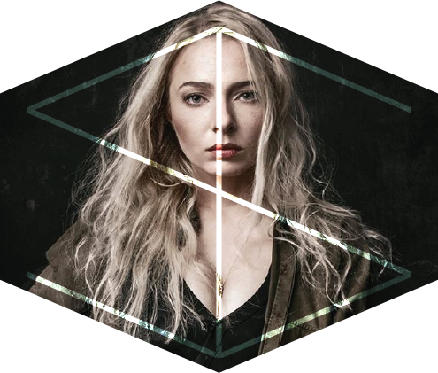

Ilona, dar kitaip ILFO, tai jauna perspektyvi fotografė, studijuojanti grafinių komunikacijų dizainą ir kaip ji juokauja - laisvalaikiu verčianti vandenį į vyną. Kai pirmą kartą su ja susipažinau pagalvojau, jei tavo nuotraukos tokios geros kaip ir humoro jausmas, eisi toli. O ji ir eina, sukasi lyg amžinas variklis. Susipažinkite – Ilona!
Papasakok apie pirmąją savo pažintį su fotoaparatu.
Vargu ar nuo mano istorijos saldumo kam nors suliptų sėdimoji, kaip dažniausiai būna, kai fotografas pradeda pasakoti apie atsitiktinai rastą senelio Zenit‘ą, kuris atseit jį – ketverių metų pienburnį, pastūmėjo domėtis fotografija. Mano atveju, prieš 10 metų, sesei vykstant pusmečiui studijuoti į užsienį, tėvai jai nupirko „Pentax“ sisteminį fotoaparatą. Sugrįžus sesei, grįžo ir fotoaparatas.
Tu studijavai fotografiją, kas paskatino pasirinkti šias studijas?
Tiesą sakant, baigus mokyklą planavau stotį visai ne į menus, o į anglų filologiją arba filosofiją, bet kadangi su istorija man sekėsi ne ką geriau nei lietuviams Eurovizijoje – per pirmąjį turą kur norėjau neįstojau, kitame – dėl viso pikto pirmuoju skaičiumi įrašiau fotografijos technologijas. Pagalvojau, kodėl ne?
Kaip sekėsi studijuoti, ką tau suteikė fotografijos mokslai?
Po pirmojo semestro iš šešių disciplinų turėdama penkias skolas, buvau pasiryžusi mesti studijas. Gavau velnių nuo tėvų, teko susigriebti. Fotografijos studijos suteikė pakankamai žinių, norint dirbti pagal specialybę ir galimybę atlikti darbo praktiką pasirinktoje įstaigoje. Mano atveju – Lietuvos Respublikos Seime. Nors dabar galiu teigti, kad tik nuo paties žmogaus priklauso, ar jis dirbs toliau pagal įgytą specialybę, dauguma mano bendrakursių baigę studijas fotografais nedirba. Gal ir gerai (juokiasi).
Plačiau apie Ilona